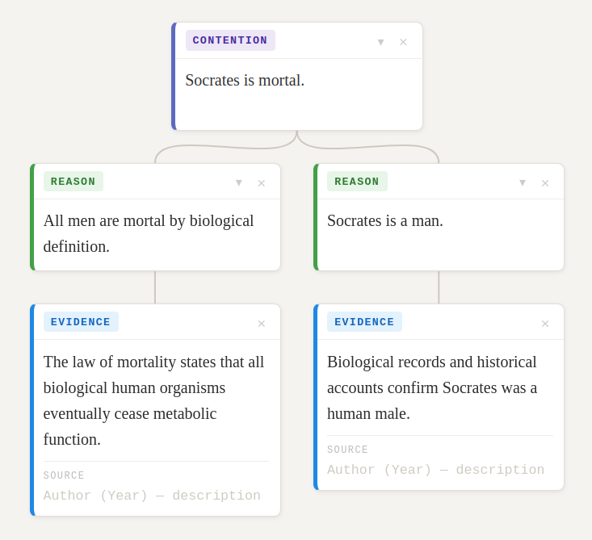

Argument Maps

An argument map is a visual diagram of the logical structure of an argument. Instead of prose, you lay out your ideas as connected boxes so you can see at a glance whether the whole thing holds together.
Every argument map has the same basic building blocks:
Argument maps are especially useful because they let you:
- Play around with ideas quickly and rearrange them without rewriting a whole paragraph
- See at a glance whether your big reasons really do "add up" to your contention (thesis)
- Spot any reasons that are not yet backed by evidence, so you know where to focus your research
Activities
Open each of the two argument maps below and work through the guided questions for each one.
For each map, answer these questions:
- What is the contention of this argument?
- Look only at the top-level reasons (ignore everything below them for now). If you believed those reasons, would you find the contention convincing?
- Now look at one reason at a time. Look at the reasons or sub-reasons directly below it. Do those convince you that the reason above them is true?
- Based on your answers to questions 2 and 3: if this were your essay, where would you focus your attention to improve the argument?
Create a new argument map in ArgMap for the following contention:
Fill in the blank with any animal you like. Then build a map that supports your contention with at least three reasons, adds some evidence or sub-reasons beneath each one, and includes at least one objection with a rebuttal.
When you are done, share your map link with the class.
Open ArgMap to start ↗